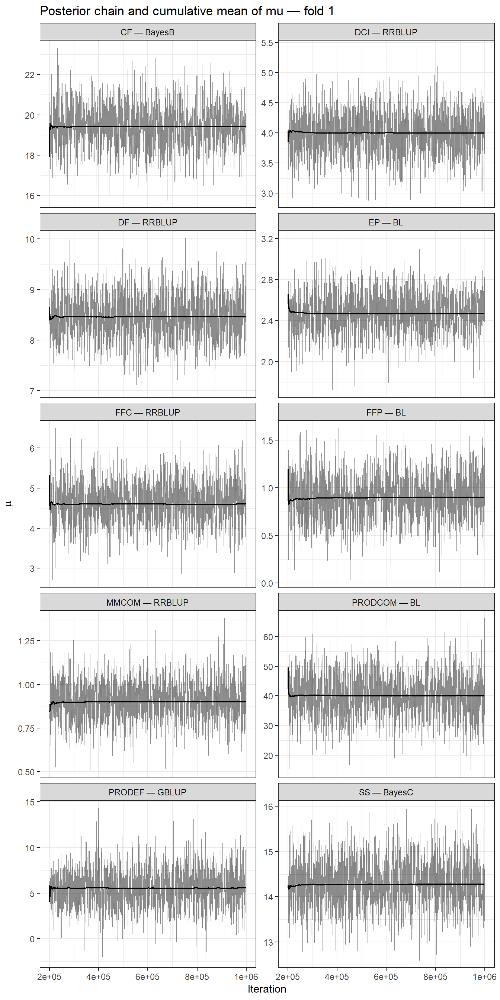
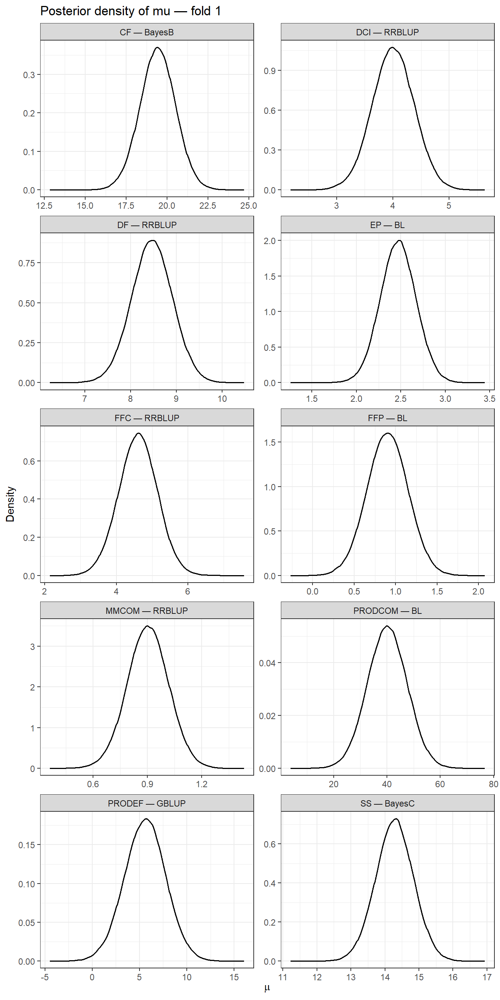
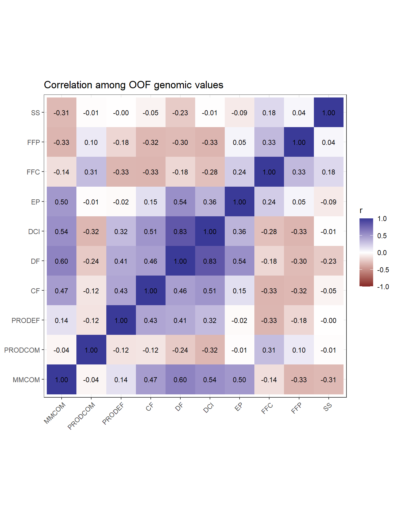

Last updated: 2026-08-10
Checks: 7 0
Knit directory:
Bayesian-ridge-regression-papaya/
This reproducible R Markdown analysis was created with workflowr (version 1.7.2). The Checks tab describes the reproducibility checks that were applied when the results were created. The Past versions tab lists the development history.
Great! Since the R Markdown file has been committed to the Git repository, you know the exact version of the code that produced these results.
Great job! The global environment was empty. Objects defined in the global environment can affect the analysis in your R Markdown file in unknown ways. For reproduciblity it’s best to always run the code in an empty environment.
The command set.seed(20260717) was run prior to running
the code in the R Markdown file. Setting a seed ensures that any results
that rely on randomness, e.g. subsampling or permutations, are
reproducible.
Great job! Recording the operating system, R version, and package versions is critical for reproducibility.
Nice! There were no cached chunks for this analysis, so you can be confident that you successfully produced the results during this run.
Great job! Using relative paths to the files within your workflowr project makes it easier to run your code on other machines.
Great! You are using Git for version control. Tracking code development and connecting the code version to the results is critical for reproducibility.
The results in this page were generated with repository version c719ad2. See the Past versions tab to see a history of the changes made to the R Markdown and HTML files.
Note that you need to be careful to ensure that all relevant files for
the analysis have been committed to Git prior to generating the results
(you can use wflow_publish or
wflow_git_commit). workflowr only checks the R Markdown
file, but you know if there are other scripts or data files that it
depends on. Below is the status of the Git repository when the results
were generated:
Ignored files:
Ignored: .Rproj.user/
Ignored: .github/
Ignored: code/
Ignored: data/Bayesiana goiaba Eileen SReport.pdf
Ignored: output/matrices/
Ignored: output/models/full/bglr_runs/
Ignored: output/models/full/runs/
Ignored: output/models/full/temporary/
Ignored: output/preprocessing/
Ignored: output/results/
Ignored: renv/library/
Ignored: renv/staging/
Note that any generated files, e.g. HTML, png, CSS, etc., are not included in this status report because it is ok for generated content to have uncommitted changes.
These are the previous versions of the repository in which changes were
made to the R Markdown (analysis/04_results_en.Rmd) and
HTML (docs/04_results_en.html) files. If you’ve configured
a remote Git repository (see ?wflow_git_remote), click on
the hyperlinks in the table below to view the files as they were in that
past version.
| File | Version | Author | Date | Message |
|---|---|---|---|---|
| Rmd | c719ad2 | WevertonGomesCosta | 2026-08-10 | fix: integrate predictive fit and convergence in model selection |
| Rmd | e829b5b | WevertonGomesCosta | 2026-08-10 | feat: add article-aligned model comparison and genomic ranking |
| Rmd | c54495b | WevertonGomesCosta | 2026-07-23 | refactor: simplify workflowr tutorial structure |
1. Objective and analytical contract
This module uses only the official results already produced in Module 03. No model is refitted.
The analysis follows the structure of Silva et al. (Silva et al. 2021) and adapts it to the methods actually fitted in this project. The article compared six Bayesian models; here all seven fitted methods are compared jointly:
- RR-BLUP, implemented with the BGLR
BRRcomponent; - BayesA;
- BayesB;
- BayesB2;
- BayesC;
- Bayesian Lasso;
- GBLUP.
The comparison includes DIC, DIC delta, approximate model probability
(Wprob), evidence ratio (ER), and
out-of-sample predictive performance.
The validation design is not changed to imitate the fold size used in the article. The project retains its validated five deterministic family-stratified folds, with 120 training and 30 validation individuals in each fold.
Because the article does not provide a single scalar rule combining
DIC and predictive ability, this project explicitly integrates three
sources of evidence: OOF performance, relative fit by DIC, and chain
stability. The highest OOF r remains the predictive
reference, but small predictive differences are not used automatically
to override a model with better DIC or clearer chain stability. The
final decision for each trait is stored in an explicit, auditable table,
without selective model refitting.
Genomic values used for ranking follow the cross-validation logic: each individual receives the genomic value from the fold in which its phenotype was masked. The five fits are not averaged and no additional full-phenotype fit is performed.
Multi-trait selection is not performed in this stage.
2. Official inputs
suppressPackageStartupMessages({
library(dplyr)
library(tidyr)
library(ggplot2)
library(knitr)
library(here)
})MATRICES_FILE <- here(
"output",
"matrices",
"matrices_object.rds"
)
MODELS_DIR <- here(
"output",
"models",
"full"
)
MODELS_FILE <- file.path(
MODELS_DIR,
"models_object.rds"
)
RESULTS_DIR <- here(
"output",
"results",
"module04"
)
FIGURE_DIR <- file.path(
RESULTS_DIR,
"figures"
)
dir.create(
RESULTS_DIR,
recursive = TRUE,
showWarnings = FALSE
)
dir.create(
FIGURE_DIR,
recursive = TRUE,
showWarnings = FALSE
)
matrices_object <- readRDS(
MATRICES_FILE
)
models_object <- readRDS(
MODELS_FILE
)
metrics <- models_object$metrics_by_fold
predictions <- models_object$predictions
genomic_by_fold <- models_object$genomic_values_by_fold
convergence <- models_object$convergence_diagnostics
run_design <- models_object$run_design
traits <- colnames(
matrices_object$phenotypes
)
methods <- c(
"RRBLUP",
"BayesA",
"BayesB",
"BayesB2",
"BayesC",
"BL",
"GBLUP"
)
method_labels <- c(
RRBLUP = "RR-BLUP/BRR",
BayesA = "BayesA",
BayesB = "BayesB",
BayesB2 = "BayesB2",
BayesC = "BayesC",
BL = "Bayesian Lasso",
GBLUP = "GBLUP"
)
EXPECTED_SIGNATURE <- "cfa762f05ddd067e"3. Input audit
input_audit <- data.frame(
Check = c(
"Official analytical signature",
"10 traits",
"7 methods",
"5 folds",
"350 fits",
"10,500 OOF predictions",
"52,500 fold-specific genomic values",
"700 convergence-diagnostic rows",
"150 OOF predictions per trait and method",
"All OOF genomic components are finite"
),
Passed = c(
identical(
models_object$signature,
EXPECTED_SIGNATURE
),
length(traits) == 10L,
setequal(
unique(run_design$Method),
methods
),
setequal(
unique(run_design$Fold),
1:5
),
nrow(metrics) == 350L,
nrow(predictions) == 10500L,
nrow(genomic_by_fold) == 52500L,
nrow(convergence) == 700L,
all(
table(
predictions$Trait,
predictions$Method
) == 150L
),
all(
is.finite(
predictions$Genomic_component
)
)
)
)
kable(
input_audit,
caption = "Audit of the official Module 04 inputs"
)| Check | Passed |
|---|---|
| Official analytical signature | TRUE |
| 10 traits | TRUE |
| 7 methods | TRUE |
| 5 folds | TRUE |
| 350 fits | TRUE |
| 10,500 OOF predictions | TRUE |
| 52,500 fold-specific genomic values | TRUE |
| 700 convergence-diagnostic rows | TRUE |
| 150 OOF predictions per trait and method | TRUE |
| All OOF genomic components are finite | TRUE |
4. OOF predictive performance
Primary metrics are calculated from the 150 out-of-sample predictions for each trait-method combination. This consolidation preserves exactly one OOF prediction per individual.
pooled_metrics <- predictions |>
group_by(
Trait,
Method
) |>
summarise(
N = n(),
r = cor(
Observed,
Predicted
),
RMSE = sqrt(
mean(
(
Observed -
Predicted
)^2
)
),
MAE = mean(
abs(
Observed -
Predicted
)
),
Bias = mean(
Predicted -
Observed
),
Slope =
cov(
Observed,
Predicted
) /
var(
Predicted
),
.groups = "drop"
)
pooled_metrics <- pooled_metrics |>
mutate(
t_value =
r *
sqrt(
(N - 2) /
(1 - r^2)
),
p_value =
2 *
pt(
abs(t_value),
df = N - 2,
lower.tail = FALSE
)
) |>
select(
-t_value
)fold_summary <- metrics |>
group_by(
Trait,
Method
) |>
summarise(
Mean_DIC = mean(
DIC
),
SD_DIC = sd(
DIC
),
Mean_fold_r = mean(
Correlation
),
SD_fold_r = sd(
Correlation
),
Mean_fold_RMSE = mean(
RMSE
),
SD_fold_RMSE = sd(
RMSE
),
Mean_fold_MAE = mean(
MAE
),
SD_fold_MAE = sd(
MAE
),
.groups = "drop"
)5. DIC, delta, Wprob, and evidence ratio
Silva et al. (Silva et al. 2021) calculated the approximate probability of each model from the difference between its DIC and the minimum DIC. In this project, normalization is extended from the six models in the article to all seven methods actually fitted.
\[ \Delta_j = DIC_j - \min(DIC) \]
\[ Wprob_j = \frac{\exp(-\Delta_j/2)} {\sum_k \exp(-\Delta_k/2)} \]
\[ ER_j = \frac{Wprob_{\max}} {Wprob_j} \]
model_comparison <- pooled_metrics |>
left_join(
fold_summary,
by = c(
"Trait",
"Method"
)
) |>
mutate(
Method_label =
unname(
method_labels[
Method
]
)
) |>
group_by(
Trait
) |>
mutate(
Delta_DIC =
Mean_DIC -
min(
Mean_DIC
),
log_weight =
-0.5 *
Delta_DIC,
stable_weight =
exp(
log_weight -
max(
log_weight
)
),
Wprob =
stable_weight /
sum(
stable_weight
),
ER =
max(
Wprob
) /
Wprob
) |>
ungroup() |>
select(
Trait,
Method,
Method_label,
Mean_DIC,
SD_DIC,
Delta_DIC,
Wprob,
ER,
N,
r,
p_value,
RMSE,
MAE,
Bias,
Slope,
Mean_fold_r,
SD_fold_r,
Mean_fold_RMSE,
SD_fold_RMSE,
Mean_fold_MAE,
SD_fold_MAE
) |>
arrange(
match(
Trait,
traits
),
Delta_DIC
)
kable(
model_comparison,
digits = 5,
caption = "Joint comparison of the seven methods by trait"
)| Trait | Method | Method_label | Mean_DIC | SD_DIC | Delta_DIC | Wprob | ER | N | r | p_value | RMSE | MAE | Bias | Slope | Mean_fold_r | SD_fold_r | Mean_fold_RMSE | SD_fold_RMSE | Mean_fold_MAE | SD_fold_MAE |
|---|---|---|---|---|---|---|---|---|---|---|---|---|---|---|---|---|---|---|---|---|
| MMCOM | RRBLUP | RR-BLUP/BRR | -11.36551 | 8.72501 | 0.00000 | 0.24484 | 1.00000 | 150 | 0.53470 | 0.00000 | 0.22878 | 0.18633 | -0.00171 | 0.75408 | 0.54392 | 0.11405 | 0.22725 | 0.02948 | 0.18633 | 0.02369 |
| MMCOM | BayesC | BayesC | -10.65753 | 8.59329 | 0.70798 | 0.17185 | 1.42474 | 150 | 0.53864 | 0.00000 | 0.22754 | 0.18649 | -0.00159 | 0.76746 | 0.54807 | 0.11416 | 0.22612 | 0.02843 | 0.18649 | 0.02248 |
| MMCOM | BayesB2 | BayesB2 | -10.35011 | 8.59189 | 1.01540 | 0.14737 | 1.66146 | 150 | 0.53815 | 0.00000 | 0.22770 | 0.18676 | -0.00141 | 0.76563 | 0.54709 | 0.11314 | 0.22627 | 0.02849 | 0.18676 | 0.02226 |
| MMCOM | BayesA | BayesA | -10.32468 | 8.55792 | 1.04083 | 0.14550 | 1.68273 | 150 | 0.53811 | 0.00000 | 0.22769 | 0.18677 | -0.00156 | 0.76611 | 0.54700 | 0.11344 | 0.22626 | 0.02847 | 0.18677 | 0.02221 |
| MMCOM | GBLUP | GBLUP | -10.24033 | 7.87379 | 1.12518 | 0.13949 | 1.75521 | 150 | 0.54479 | 0.00000 | 0.22529 | 0.18665 | -0.00059 | 0.79883 | 0.55136 | 0.11124 | 0.22408 | 0.02604 | 0.18665 | 0.02002 |
| MMCOM | BayesB | BayesB | -9.64150 | 8.33915 | 1.72401 | 0.10340 | 2.36790 | 150 | 0.54012 | 0.00000 | 0.22707 | 0.18702 | -0.00167 | 0.77288 | 0.54912 | 0.11287 | 0.22574 | 0.02748 | 0.18702 | 0.02139 |
| MMCOM | BL | Bayesian Lasso | -8.08749 | 7.33326 | 3.27802 | 0.04754 | 5.15007 | 150 | 0.54485 | 0.00000 | 0.22499 | 0.18781 | -0.00023 | 0.80695 | 0.54992 | 0.10989 | 0.22395 | 0.02425 | 0.18781 | 0.01826 |
| PRODCOM | BL | Bayesian Lasso | 1057.14272 | 4.96490 | 0.00000 | 0.24501 | 1.00000 | 150 | 0.50373 | 0.00000 | 18.71841 | 14.52165 | 0.26492 | 0.80225 | 0.49133 | 0.14586 | 18.67588 | 1.40998 | 14.52165 | 1.51847 |
| PRODCOM | GBLUP | GBLUP | 1057.43851 | 4.53505 | 0.29579 | 0.21133 | 1.15939 | 150 | 0.49753 | 0.00000 | 18.82235 | 14.57383 | 0.19891 | 0.78876 | 0.48530 | 0.13887 | 18.78417 | 1.33957 | 14.57383 | 1.56681 |
| PRODCOM | BayesA | BayesA | 1058.37656 | 4.62294 | 1.23384 | 0.13221 | 1.85321 | 150 | 0.49283 | 0.00000 | 18.90267 | 14.58714 | 0.18672 | 0.77832 | 0.48006 | 0.13755 | 18.86905 | 1.25973 | 14.58714 | 1.61417 |
| PRODCOM | BayesB2 | BayesB2 | 1058.45391 | 4.62412 | 1.31118 | 0.12719 | 1.92628 | 150 | 0.49300 | 0.00000 | 18.90039 | 14.58838 | 0.18331 | 0.77847 | 0.48032 | 0.13770 | 18.86636 | 1.26748 | 14.58838 | 1.61385 |
| PRODCOM | BayesB | BayesB | 1058.48732 | 4.53126 | 1.34460 | 0.12509 | 1.95874 | 150 | 0.49282 | 0.00000 | 18.90128 | 14.57106 | 0.17389 | 0.77884 | 0.48043 | 0.13894 | 18.86849 | 1.24412 | 14.57106 | 1.61195 |
| PRODCOM | BayesC | BayesC | 1059.11805 | 4.12875 | 1.97533 | 0.09125 | 2.68496 | 150 | 0.48364 | 0.00000 | 19.07275 | 14.67416 | 0.10538 | 0.75428 | 0.47127 | 0.13284 | 19.04336 | 1.18332 | 14.67416 | 1.64863 |
| PRODCOM | RRBLUP | RR-BLUP/BRR | 1059.70872 | 4.18336 | 2.56600 | 0.06792 | 3.60744 | 150 | 0.47735 | 0.00000 | 19.19634 | 14.80471 | 0.08815 | 0.73681 | 0.46474 | 0.12734 | 19.16784 | 1.16910 | 14.80471 | 1.70581 |
| PRODEF | GBLUP | GBLUP | 735.96294 | 17.69426 | 0.00000 | 0.19845 | 1.00000 | 150 | 0.11807 | 0.15015 | 5.33260 | 4.06613 | 0.10288 | 0.22993 | 0.17885 | 0.12561 | 5.21153 | 1.26319 | 4.06613 | 0.81068 |
| PRODEF | BL | Bayesian Lasso | 736.43421 | 18.33148 | 0.47127 | 0.15679 | 1.26571 | 150 | 0.13892 | 0.09001 | 5.27666 | 3.99762 | 0.05653 | 0.27205 | 0.20342 | 0.13810 | 5.14845 | 1.29260 | 3.99762 | 0.82048 |
| PRODEF | BayesB | BayesB | 736.63872 | 17.58000 | 0.67578 | 0.14155 | 1.40199 | 150 | 0.10990 | 0.18064 | 5.37695 | 4.09670 | 0.13745 | 0.20888 | 0.17505 | 0.12273 | 5.26191 | 1.23689 | 4.09670 | 0.80078 |
| PRODEF | BayesC | BayesC | 736.75875 | 16.77644 | 0.79581 | 0.13330 | 1.48870 | 150 | 0.10751 | 0.19037 | 5.39483 | 4.11474 | 0.14870 | 0.20201 | 0.17093 | 0.11541 | 5.28504 | 1.21062 | 4.11474 | 0.79265 |
| PRODEF | BayesA | BayesA | 736.78665 | 17.66096 | 0.82371 | 0.13146 | 1.50961 | 150 | 0.10695 | 0.19270 | 5.38260 | 4.10491 | 0.13301 | 0.20355 | 0.17074 | 0.11811 | 5.26928 | 1.22832 | 4.10491 | 0.79350 |
| PRODEF | BayesB2 | BayesB2 | 736.78874 | 17.69463 | 0.82580 | 0.13132 | 1.51119 | 150 | 0.10746 | 0.19056 | 5.38001 | 4.10229 | 0.13264 | 0.20480 | 0.17102 | 0.11747 | 5.26682 | 1.22735 | 4.10229 | 0.79121 |
| PRODEF | RRBLUP | RR-BLUP/BRR | 737.19594 | 16.53955 | 1.23300 | 0.10713 | 1.85244 | 150 | 0.10336 | 0.20814 | 5.41405 | 4.14208 | 0.15128 | 0.19258 | 0.16526 | 0.10838 | 5.30805 | 1.19190 | 4.14208 | 0.77355 |
| CF | BayesB | BayesB | 564.23021 | 8.23945 | 0.00000 | 0.22225 | 1.00000 | 150 | 0.41692 | 0.00000 | 2.46583 | 1.98226 | 0.03647 | 0.68940 | 0.44076 | 0.12463 | 2.45065 | 0.30543 | 1.98226 | 0.28637 |
| CF | BayesC | BayesC | 564.39793 | 8.71896 | 0.16772 | 0.20437 | 1.08748 | 150 | 0.41147 | 0.00000 | 2.47524 | 1.98636 | 0.02716 | 0.68017 | 0.43472 | 0.12520 | 2.45953 | 0.31129 | 1.98636 | 0.29497 |
| CF | BL | Bayesian Lasso | 564.90566 | 8.85371 | 0.67544 | 0.15855 | 1.40175 | 150 | 0.41130 | 0.00000 | 2.47325 | 2.00064 | 0.02541 | 0.68456 | 0.42837 | 0.11977 | 2.45849 | 0.30168 | 2.00064 | 0.28355 |
| CF | GBLUP | GBLUP | 565.63141 | 9.67139 | 1.40120 | 0.11030 | 2.01496 | 150 | 0.40550 | 0.00000 | 2.47512 | 1.98635 | 0.01465 | 0.69207 | 0.42443 | 0.12025 | 2.45968 | 0.30863 | 1.98635 | 0.30345 |
| CF | BayesB2 | BayesB2 | 565.66061 | 9.16536 | 1.43040 | 0.10870 | 2.04460 | 150 | 0.40537 | 0.00000 | 2.48246 | 1.99140 | 0.02625 | 0.67663 | 0.42745 | 0.12191 | 2.46703 | 0.30891 | 1.99140 | 0.29626 |
| CF | BayesA | BayesA | 565.67584 | 9.13274 | 1.44563 | 0.10788 | 2.06023 | 150 | 0.40607 | 0.00000 | 2.48123 | 1.99018 | 0.02586 | 0.67787 | 0.42810 | 0.12220 | 2.46582 | 0.30871 | 1.99018 | 0.29625 |
| CF | RRBLUP | RR-BLUP/BRR | 566.08401 | 9.93261 | 1.85380 | 0.08796 | 2.52666 | 150 | 0.39657 | 0.00000 | 2.50187 | 2.00174 | 0.01873 | 0.65345 | 0.41894 | 0.12233 | 2.48598 | 0.31479 | 2.00174 | 0.30549 |
| DF | RRBLUP | RR-BLUP/BRR | 343.54304 | 8.74074 | 0.00000 | 0.24517 | 1.00000 | 150 | 0.45146 | 0.00000 | 0.99954 | 0.77513 | -0.01589 | 0.74788 | 0.44061 | 0.13349 | 0.99278 | 0.12976 | 0.77513 | 0.12583 |
| DF | GBLUP | GBLUP | 344.38724 | 9.11129 | 0.84420 | 0.16075 | 1.52516 | 150 | 0.44234 | 0.00000 | 1.00301 | 0.78254 | -0.01519 | 0.75445 | 0.43233 | 0.16042 | 0.99582 | 0.13407 | 0.78254 | 0.13098 |
| DF | BayesC | BayesC | 344.45082 | 8.88027 | 0.90778 | 0.15572 | 1.57443 | 150 | 0.44867 | 0.00000 | 1.00132 | 0.77719 | -0.02064 | 0.74563 | 0.43699 | 0.13811 | 0.99461 | 0.12940 | 0.77719 | 0.12264 |
| DF | BayesB2 | BayesB2 | 344.64763 | 9.02482 | 1.10459 | 0.14113 | 1.73724 | 150 | 0.44546 | 0.00000 | 1.00297 | 0.77774 | -0.01670 | 0.74440 | 0.43370 | 0.14372 | 0.99595 | 0.13248 | 0.77774 | 0.12700 |
| DF | BayesA | BayesA | 344.66291 | 8.95806 | 1.11987 | 0.14005 | 1.75056 | 150 | 0.44524 | 0.00000 | 1.00307 | 0.77790 | -0.01656 | 0.74446 | 0.43347 | 0.14367 | 0.99601 | 0.13277 | 0.77790 | 0.12731 |
| DF | BayesB | BayesB | 345.47879 | 9.09868 | 1.93575 | 0.09314 | 2.63234 | 150 | 0.44210 | 0.00000 | 1.00587 | 0.78039 | -0.02113 | 0.73639 | 0.42964 | 0.14614 | 0.99902 | 0.13101 | 0.78039 | 0.12252 |
| DF | BL | Bayesian Lasso | 346.22756 | 9.35939 | 2.68453 | 0.06405 | 3.82770 | 150 | 0.43226 | 0.00000 | 1.00988 | 0.79179 | -0.01509 | 0.73922 | 0.42212 | 0.17653 | 1.00264 | 0.13494 | 0.79179 | 0.12879 |
| DCI | BayesC | BayesC | 297.40213 | 11.31579 | 0.00000 | 0.18613 | 1.00000 | 150 | 0.22766 | 0.00508 | 0.82396 | 0.64608 | -0.02766 | 0.44747 | 0.23585 | 0.18706 | 0.81840 | 0.10685 | 0.64608 | 0.06091 |
| DCI | GBLUP | GBLUP | 297.72198 | 10.29565 | 0.31985 | 0.15863 | 1.17342 | 150 | 0.21387 | 0.00859 | 0.82439 | 0.64958 | -0.02255 | 0.43949 | 0.21567 | 0.19067 | 0.81956 | 0.09963 | 0.64958 | 0.06939 |
| DCI | BayesB | BayesB | 297.96170 | 10.82819 | 0.55956 | 0.14071 | 1.32284 | 150 | 0.22319 | 0.00604 | 0.82437 | 0.64818 | -0.02504 | 0.44381 | 0.23152 | 0.18648 | 0.81894 | 0.10556 | 0.64818 | 0.06437 |
| DCI | RRBLUP | RR-BLUP/BRR | 297.99031 | 11.74150 | 0.58818 | 0.13871 | 1.34190 | 150 | 0.23004 | 0.00463 | 0.82389 | 0.64385 | -0.02925 | 0.44884 | 0.23778 | 0.18627 | 0.81827 | 0.10742 | 0.64385 | 0.05865 |
| DCI | BayesA | BayesA | 298.18854 | 11.11823 | 0.78640 | 0.12562 | 1.48172 | 150 | 0.22251 | 0.00621 | 0.82468 | 0.64699 | -0.02665 | 0.44249 | 0.23093 | 0.18461 | 0.81920 | 0.10610 | 0.64699 | 0.06448 |
| DCI | BayesB2 | BayesB2 | 298.19130 | 11.02701 | 0.78917 | 0.12545 | 1.48377 | 150 | 0.22272 | 0.00615 | 0.82444 | 0.64692 | -0.02654 | 0.44351 | 0.23091 | 0.18518 | 0.81898 | 0.10593 | 0.64692 | 0.06456 |
| DCI | BL | Bayesian Lasso | 298.20241 | 9.57035 | 0.80028 | 0.12475 | 1.49203 | 150 | 0.20632 | 0.01131 | 0.82636 | 0.65228 | -0.01985 | 0.42753 | 0.20560 | 0.19407 | 0.82173 | 0.09769 | 0.65228 | 0.07248 |
| EP | BL | Bayesian Lasso | 168.01213 | 24.08045 | 0.00000 | 0.24863 | 1.00000 | 150 | -0.04982 | 0.54489 | 0.51735 | 0.35176 | -0.01270 | -0.10728 | 0.02129 | 0.19888 | 0.49658 | 0.16223 | 0.35176 | 0.07892 |
| EP | GBLUP | GBLUP | 168.27841 | 25.03821 | 0.26628 | 0.21764 | 1.14241 | 150 | -0.05818 | 0.47948 | 0.52055 | 0.35301 | -0.01458 | -0.12332 | 0.01412 | 0.20733 | 0.49931 | 0.16457 | 0.35301 | 0.08144 |
| EP | BayesB2 | BayesB2 | 169.27045 | 24.91882 | 1.25832 | 0.13253 | 1.87604 | 150 | -0.07128 | 0.38606 | 0.52499 | 0.35526 | -0.01688 | -0.14847 | 0.00494 | 0.21611 | 0.50288 | 0.16854 | 0.35526 | 0.08382 |
| EP | BayesA | BayesA | 169.28570 | 24.89836 | 1.27357 | 0.13152 | 1.89039 | 150 | -0.07074 | 0.38969 | 0.52496 | 0.35529 | -0.01696 | -0.14723 | 0.00512 | 0.21642 | 0.50287 | 0.16846 | 0.35529 | 0.08361 |
| EP | BayesB | BayesB | 169.59338 | 24.50805 | 1.58125 | 0.11277 | 2.20477 | 150 | -0.06672 | 0.41724 | 0.52344 | 0.35507 | -0.01611 | -0.13981 | 0.00835 | 0.21154 | 0.50166 | 0.16707 | 0.35507 | 0.08327 |
| EP | BayesC | BayesC | 170.29421 | 25.75890 | 2.28209 | 0.07943 | 3.13003 | 150 | -0.07209 | 0.38067 | 0.52764 | 0.35722 | -0.01745 | -0.14679 | 0.00339 | 0.21833 | 0.50556 | 0.16886 | 0.35722 | 0.08581 |
| EP | RRBLUP | RR-BLUP/BRR | 170.34393 | 26.61773 | 2.33180 | 0.07748 | 3.20881 | 150 | -0.07745 | 0.34619 | 0.53166 | 0.35886 | -0.01897 | -0.15372 | -0.00216 | 0.22359 | 0.50929 | 0.17062 | 0.35886 | 0.08716 |
| FFC | BayesA | BayesA | 386.11832 | 10.80394 | 0.00000 | 0.16308 | 1.00000 | 150 | 0.11062 | 0.17778 | 1.23399 | 0.96228 | 0.02222 | 0.20860 | 0.14852 | 0.15758 | 1.22289 | 0.18456 | 0.96228 | 0.19841 |
| FFC | BayesB2 | BayesB2 | 386.13978 | 10.79837 | 0.02145 | 0.16134 | 1.01078 | 150 | 0.11057 | 0.17797 | 1.23363 | 0.96226 | 0.02174 | 0.20885 | 0.14832 | 0.15766 | 1.22257 | 0.18423 | 0.96226 | 0.19761 |
| FFC | GBLUP | GBLUP | 386.19772 | 9.30486 | 0.07939 | 0.15673 | 1.04049 | 150 | 0.11811 | 0.15002 | 1.21840 | 0.95327 | 0.02359 | 0.23455 | 0.15032 | 0.14128 | 1.20943 | 0.16499 | 0.95327 | 0.17481 |
| FFC | RRBLUP | RR-BLUP/BRR | 386.35484 | 11.43569 | 0.23652 | 0.14489 | 1.12554 | 150 | 0.12832 | 0.11760 | 1.22835 | 0.95176 | 0.01827 | 0.23742 | 0.16306 | 0.16482 | 1.21692 | 0.18691 | 0.95176 | 0.20986 |
| FFC | BayesB | BayesB | 386.62097 | 10.33818 | 0.50265 | 0.12684 | 1.28573 | 150 | 0.11364 | 0.16615 | 1.22961 | 0.95997 | 0.02281 | 0.21681 | 0.14890 | 0.15162 | 1.21921 | 0.17841 | 0.95997 | 0.19135 |
| FFC | BayesC | BayesC | 386.64389 | 10.76967 | 0.52557 | 0.12539 | 1.30055 | 150 | 0.12477 | 0.12819 | 1.22592 | 0.95346 | 0.02053 | 0.23535 | 0.15843 | 0.15657 | 1.21523 | 0.18056 | 0.95346 | 0.19918 |
| FFC | BL | Bayesian Lasso | 386.70326 | 8.50999 | 0.58494 | 0.12173 | 1.33973 | 150 | 0.11151 | 0.17428 | 1.21843 | 0.95608 | 0.02530 | 0.22530 | 0.14281 | 0.13280 | 1.21019 | 0.15810 | 0.95608 | 0.16397 |
| FFP | BL | Bayesian Lasso | 198.17524 | 67.42925 | 0.00000 | 0.32031 | 1.00000 | 150 | 0.11535 | 0.15985 | 0.59423 | 0.30294 | -0.01115 | 0.23363 | 0.22423 | 0.12373 | 0.52119 | 0.31911 | 0.30294 | 0.07772 |
| FFP | GBLUP | GBLUP | 199.07149 | 67.38429 | 0.89624 | 0.20462 | 1.56537 | 150 | 0.10294 | 0.21002 | 0.59915 | 0.30788 | -0.01313 | 0.20512 | 0.20379 | 0.11164 | 0.52755 | 0.31756 | 0.30788 | 0.07733 |
| FFP | BayesA | BayesA | 199.98187 | 67.42452 | 1.80663 | 0.12980 | 2.46777 | 150 | 0.09844 | 0.23074 | 0.60106 | 0.31001 | -0.01290 | 0.19480 | 0.19466 | 0.10527 | 0.53066 | 0.31560 | 0.31001 | 0.07625 |
| FFP | BayesB2 | BayesB2 | 199.98913 | 67.38113 | 1.81388 | 0.12933 | 2.47674 | 150 | 0.09895 | 0.22830 | 0.60095 | 0.30993 | -0.01293 | 0.19578 | 0.19557 | 0.10550 | 0.53048 | 0.31569 | 0.30993 | 0.07642 |
| FFP | BayesB | BayesB | 200.11764 | 67.38190 | 1.94239 | 0.12128 | 2.64110 | 150 | 0.10061 | 0.22058 | 0.60017 | 0.30855 | -0.01232 | 0.19966 | 0.19929 | 0.10739 | 0.52923 | 0.31646 | 0.30855 | 0.07715 |
| FFP | BayesC | BayesC | 201.64652 | 67.39004 | 3.47127 | 0.05647 | 5.67254 | 150 | 0.08428 | 0.30518 | 0.60763 | 0.31596 | -0.01463 | 0.16265 | 0.17117 | 0.09424 | 0.53912 | 0.31339 | 0.31596 | 0.07632 |
| FFP | RRBLUP | RR-BLUP/BRR | 202.42873 | 67.35809 | 4.25348 | 0.03819 | 8.38749 | 150 | 0.07379 | 0.36951 | 0.61328 | 0.32296 | -0.01664 | 0.13913 | 0.15247 | 0.08872 | 0.54672 | 0.31067 | 0.32296 | 0.07510 |
| SS | BayesC | BayesC | 381.51062 | 13.96964 | 0.00000 | 0.21478 | 1.00000 | 150 | 0.18849 | 0.02089 | 1.21702 | 0.93450 | 0.02549 | 0.34961 | 0.21711 | 0.20194 | 1.20092 | 0.22059 | 0.93450 | 0.12431 |
| SS | RRBLUP | RR-BLUP/BRR | 381.63926 | 15.48863 | 0.12864 | 0.20140 | 1.06643 | 150 | 0.18514 | 0.02332 | 1.22306 | 0.94059 | 0.02785 | 0.33719 | 0.21743 | 0.20641 | 1.20585 | 0.22861 | 0.94059 | 0.12487 |
| SS | BayesB | BayesB | 382.16948 | 13.60010 | 0.65885 | 0.15450 | 1.39017 | 150 | 0.19061 | 0.01947 | 1.21526 | 0.93389 | 0.02473 | 0.35433 | 0.21637 | 0.19645 | 1.19980 | 0.21602 | 0.93389 | 0.12481 |
| SS | BayesA | BayesA | 382.28643 | 15.25673 | 0.77580 | 0.14572 | 1.47388 | 150 | 0.18399 | 0.02421 | 1.22089 | 0.93911 | 0.02631 | 0.33945 | 0.21619 | 0.20250 | 1.20385 | 0.22731 | 0.93911 | 0.12159 |
| SS | BayesB2 | BayesB2 | 382.34672 | 15.24432 | 0.83610 | 0.14140 | 1.51900 | 150 | 0.18392 | 0.02426 | 1.22062 | 0.93892 | 0.02616 | 0.33982 | 0.21607 | 0.20258 | 1.20359 | 0.22713 | 0.93892 | 0.12149 |
| SS | GBLUP | GBLUP | 383.13893 | 14.48326 | 1.62831 | 0.09515 | 2.25727 | 150 | 0.16969 | 0.03789 | 1.21387 | 0.93418 | 0.02115 | 0.33771 | 0.19864 | 0.20144 | 1.19889 | 0.21252 | 0.93418 | 0.10616 |
| SS | BL | Bayesian Lasso | 384.54769 | 13.62140 | 3.03707 | 0.04704 | 4.56553 | 150 | 0.16574 | 0.04266 | 1.21114 | 0.93269 | 0.01866 | 0.33880 | 0.19212 | 0.19674 | 1.19705 | 0.20592 | 0.93269 | 0.10327 |
wprob_audit <- model_comparison |>
group_by(
Trait
) |>
summarise(
Sum_Wprob = sum(
Wprob
),
.groups = "drop"
)
kable(
wprob_audit,
digits = 12,
caption = "Wprob normalization audit"
)| Trait | Sum_Wprob |
|---|---|
| CF | 1 |
| DCI | 1 |
| DF | 1 |
| EP | 1 |
| FFC | 1 |
| FFP | 1 |
| MMCOM | 1 |
| PRODCOM | 1 |
| PRODEF | 1 |
| SS | 1 |
correlation_plot <- model_comparison |>
mutate(
Method_label = factor(
Method_label,
levels = unname(
method_labels[
methods
]
)
)
) |>
ggplot(
aes(
x = Method_label,
y = r
)
) +
geom_hline(
yintercept = 0,
linetype = 2
) +
geom_col() +
facet_wrap(
~ Trait,
scales = "free_y",
ncol = 2
) +
labs(
x = NULL,
y = "OOF correlation",
title = "Predictive ability of the seven methods"
) +
theme_bw() +
theme(
axis.text.x = element_text(
angle = 45,
hjust = 1
)
)
correlation_plot
ggsave(
filename = file.path(
FIGURE_DIR,
"predictive_correlation_by_method_en.png"
),
plot = correlation_plot,
width = 12,
height = 14,
dpi = 300
)6. Final method selection by trait
The highest OOF correlation is retained as the predictive reference, whereas the minimum DIC identifies the best relative fit. The final decision does not apply an arbitrary numerical penalty that combines these two quantities. Instead, it explicitly records cases in which a very small predictive difference does not compensate for poorer relative fit or clear evidence of chain instability.
The scientific audit of the results led to the following final decisions:
MMCOM: RR-BLUP, because the BL gain inrwas small, whereas RR-BLUP had the minimum DIC and no flags;PRODCOM: BL, the winner for both prediction and DIC, while retaining its convergence warning;PRODEF: GBLUP, because the BL predictive advantage was weak and accompanied by extreme instability, whereas GBLUP had the minimum DIC and no flags;CF: BayesB, the prediction and DIC winner with no flags;DF: RR-BLUP, the prediction and DIC winner with no flags;DCI: RR-BLUP, with the highestr, DIC close to BayesC, and no flags;EP: BL, the relative predictive and DIC winner, although without a positive predictive signal;FFC: RR-BLUP, with the highestr, DIC very close to the minimum, and no flags;FFP: BL, the prediction and DIC winner, but with weak predictive evidence and convergence flags;SS: BayesC, because its correlation was essentially the same as BayesB, with lower DIC and no flags.
predictive_ranking <- model_comparison |>
group_by(
Trait
) |>
arrange(
desc(r),
RMSE,
MAE,
.by_group = TRUE
) |>
mutate(
Predictive_rank =
row_number()
) |>
ungroup()
predictive_winners <- predictive_ranking |>
filter(
Predictive_rank == 1L
) |>
transmute(
Trait,
Predictive_winner = Method,
Predictive_winner_r = r,
Predictive_winner_p_value = p_value,
Predictive_winner_RMSE = RMSE,
Predictive_winner_MAE = MAE
)
dic_winners <- model_comparison |>
group_by(
Trait
) |>
arrange(
Mean_DIC,
.by_group = TRUE
) |>
slice(
1L
) |>
ungroup() |>
transmute(
Trait,
DIC_winner = Method,
Minimum_DIC =
Mean_DIC,
DIC_winner_Wprob =
Wprob
)
convergence_by_trait_method <- convergence |>
group_by(
Trait,
Method
) |>
summarise(
Runs =
n_distinct(
Run_id
),
Parameters_reviewed =
n(),
Parameters_flagged =
sum(
Review_flag
),
Runs_with_flags =
n_distinct(
Run_id[
Review_flag
]
),
Minimum_ESS =
min(
Effective_sample_size,
na.rm = TRUE
),
Maximum_absolute_Geweke =
max(
abs(
Geweke_Z
),
na.rm = TRUE
),
.groups = "drop"
)
selection_spec <- data.frame(
Trait = c(
"MMCOM",
"PRODCOM",
"PRODEF",
"CF",
"DF",
"DCI",
"EP",
"FFC",
"FFP",
"SS"
),
Selected_method = c(
"RRBLUP",
"BL",
"GBLUP",
"BayesB",
"RRBLUP",
"RRBLUP",
"BL",
"RRBLUP",
"BL",
"BayesC"
),
Decision_code = c(
"prefer_dic_stability_small_predictive_loss",
"predictive_and_dic_winner_convergence_review",
"prefer_stable_dic_winner_weak_prediction",
"predictive_and_dic_winner",
"predictive_and_dic_winner",
"best_prediction_similar_dic_stable",
"predictive_and_dic_winner_no_positive_signal",
"best_prediction_similar_dic_stable_weak_signal",
"predictive_and_dic_winner_weak_signal_convergence_review",
"prefer_stable_dic_winner_negligible_predictive_loss"
),
stringsAsFactors = FALSE
)
selected_performance <- model_comparison |>
inner_join(
selection_spec |>
select(
Trait,
Selected_method
),
by = "Trait"
) |>
filter(
Method ==
Selected_method
) |>
transmute(
Trait,
Selected_method,
Selected_method_label =
Method_label,
r,
p_value,
RMSE,
MAE,
Bias,
Slope,
Mean_DIC,
Delta_DIC,
Wprob,
ER,
Mean_fold_r,
SD_fold_r
)
model_selection <- selection_spec |>
left_join(
selected_performance,
by = c(
"Trait",
"Selected_method"
)
) |>
left_join(
predictive_winners,
by = "Trait"
) |>
left_join(
dic_winners,
by = "Trait"
) |>
left_join(
convergence_by_trait_method,
by = c(
"Trait",
"Selected_method" = "Method"
)
) |>
mutate(
Predictive_loss =
Predictive_winner_r -
r,
Predictive_winner_agrees =
Selected_method ==
Predictive_winner,
DIC_winner_agrees =
Selected_method ==
DIC_winner,
Convergence_review =
Parameters_flagged >
0,
Predictive_evidence =
case_when(
r > 0 &
p_value < 0.05 ~
"positive_p_lt_0.05",
r > 0 &
p_value >= 0.05 ~
"positive_p_ge_0.05",
TRUE ~
"nonpositive_p_ge_0.05"
)
) |>
arrange(
match(
Trait,
traits
)
)
decision_labels <- c(
prefer_dic_stability_small_predictive_loss =
"Lower DIC and greater stability with a small predictive loss",
predictive_and_dic_winner_convergence_review =
"Prediction and DIC winner; convergence requires review",
prefer_stable_dic_winner_weak_prediction =
"Lower DIC and stable chain under weak predictive ability",
predictive_and_dic_winner =
"Prediction and DIC winner with no flags",
best_prediction_similar_dic_stable =
"Highest prediction, DIC close to the minimum, and stable chain",
predictive_and_dic_winner_no_positive_signal =
"Relative prediction and DIC winner, but no positive predictive signal",
best_prediction_similar_dic_stable_weak_signal =
"Highest prediction and stability, but weak predictive evidence",
predictive_and_dic_winner_weak_signal_convergence_review =
"Prediction and DIC winner with weak evidence and convergence flags",
prefer_stable_dic_winner_negligible_predictive_loss =
"Lower DIC and greater stability with a negligible predictive loss"
)
predictive_evidence_labels <- c(
positive_p_lt_0.05 =
"Positive correlation with p < 0.05",
positive_p_ge_0.05 =
"Positive correlation, but p >= 0.05",
nonpositive_p_ge_0.05 =
"Non-positive correlation and p >= 0.05"
)
model_selection_display <- model_selection |>
mutate(
Decision =
unname(
decision_labels[
Decision_code
]
),
Predictive_evidence_label =
unname(
predictive_evidence_labels[
Predictive_evidence
]
)
) |>
select(
Trait,
Selected_method,
Predictive_winner,
DIC_winner,
r,
p_value,
Predictive_loss,
Delta_DIC,
Wprob,
ER,
Parameters_flagged,
Runs_with_flags,
Minimum_ESS,
Maximum_absolute_Geweke,
Predictive_evidence_label,
Decision
)
kable(
model_selection_display,
digits = 5,
caption = "Final decision by trait integrating prediction, DIC, and convergence"
)| Trait | Selected_method | Predictive_winner | DIC_winner | r | p_value | Predictive_loss | Delta_DIC | Wprob | ER | Parameters_flagged | Runs_with_flags | Minimum_ESS | Maximum_absolute_Geweke | Predictive_evidence_label | Decision |
|---|---|---|---|---|---|---|---|---|---|---|---|---|---|---|---|
| MMCOM | RRBLUP | BL | RRBLUP | 0.53470 | 0.00000 | 0.01015 | 0.00000 | 0.24484 | 1.00000 | 0 | 0 | 54427.5106 | 1.72423 | Positive correlation with p < 0.05 | Lower DIC and greater stability with a small predictive loss |
| PRODCOM | BL | BL | BL | 0.50373 | 0.00000 | 0.00000 | 0.00000 | 0.24501 | 1.00000 | 2 | 1 | 566.5092 | 13.68986 | Positive correlation with p < 0.05 | Prediction and DIC winner; convergence requires review |
| PRODEF | GBLUP | BL | GBLUP | 0.11807 | 0.15015 | 0.02084 | 0.00000 | 0.19845 | 1.00000 | 0 | 0 | 46609.9415 | 1.54339 | Positive correlation, but p >= 0.05 | Lower DIC and stable chain under weak predictive ability |
| CF | BayesB | BayesB | BayesB | 0.41692 | 0.00000 | 0.00000 | 0.00000 | 0.22225 | 1.00000 | 0 | 0 | 2082.0925 | 1.80521 | Positive correlation with p < 0.05 | Prediction and DIC winner with no flags |
| DF | RRBLUP | RRBLUP | RRBLUP | 0.45146 | 0.00000 | 0.00000 | 0.00000 | 0.24517 | 1.00000 | 0 | 0 | 49784.4898 | 1.97229 | Positive correlation with p < 0.05 | Prediction and DIC winner with no flags |
| DCI | RRBLUP | RRBLUP | BayesC | 0.23004 | 0.00463 | 0.00000 | 0.58818 | 0.13871 | 1.34190 | 0 | 0 | 51417.8484 | 1.53432 | Positive correlation with p < 0.05 | Highest prediction, DIC close to the minimum, and stable chain |
| EP | BL | BL | BL | -0.04982 | 0.54489 | 0.00000 | 0.00000 | 0.24863 | 1.00000 | 0 | 0 | 6015.2509 | 1.77165 | Non-positive correlation and p >= 0.05 | Relative prediction and DIC winner, but no positive predictive signal |
| FFC | RRBLUP | RRBLUP | BayesA | 0.12832 | 0.11760 | 0.00000 | 0.23652 | 0.14489 | 1.12554 | 0 | 0 | 37087.9665 | 0.98895 | Positive correlation, but p >= 0.05 | Highest prediction and stability, but weak predictive evidence |
| FFP | BL | BL | BL | 0.11535 | 0.15985 | 0.00000 | 0.00000 | 0.32031 | 1.00000 | 4 | 3 | 7390.3881 | 4.28505 | Positive correlation, but p >= 0.05 | Prediction and DIC winner with weak evidence and convergence flags |
| SS | BayesC | BayesB | BayesC | 0.18849 | 0.02089 | 0.00212 | 0.00000 | 0.21478 | 1.00000 | 0 | 0 | 33709.9666 | 1.85316 | Positive correlation with p < 0.05 | Lower DIC and greater stability with a negligible predictive loss |
6.1. Predictive evidence for the final methods
Selecting a final method does not imply that a trait has useful
predictive ability. To separate these two questions, the result is
classified only by the direction of r and the p-value of
the OOF correlation, without converting this classification into a new
model-fitting criterion.
predictive_evidence_summary <- model_selection |>
count(
Predictive_evidence,
name = "Traits"
)
predictive_evidence_summary$Evidence <- unname(
predictive_evidence_labels[
predictive_evidence_summary$
Predictive_evidence
]
)
kable(
predictive_evidence_summary |>
select(
Evidence,
Traits
),
caption = "Summary of predictive evidence for the final methods"
)| Evidence | Traits |
|---|---|
| Non-positive correlation and p >= 0.05 | 1 |
| Positive correlation, but p >= 0.05 | 3 |
| Positive correlation with p < 0.05 | 6 |
Rankings are calculated for every trait to preserve analytical
completeness. However, PRODEF, FFC, and
FFP have positive correlations with
p >= 0.05, whereas EP has a non-positive
correlation. These rankings should therefore be interpreted cautiously
and not with the same strength of evidence observed for
MMCOM, PRODCOM, CF,
DF, DCI, and SS.
7. Visual diagnostics of selected-model chains
As a visual analogue to Figure 1 of the article, this section presents the posterior chain of \(\mu\), its cumulative mean, and posterior density in the first fold for the selected method of each trait.
Formal convergence assessment remains the Module 03 assessment based
on the residual-variance chain and the method-specific genomic-parameter
chain. The \(\mu\) inspection below is
complementary and does not replace ESS, Geweke, or the
Review_flag indicators.
burn_in_saved <-
models_object$settings$burn_in /
models_object$settings$thin
selected_method_lookup <- setNames(
model_selection$Selected_method,
model_selection$Trait
)
trace_parts <- vector(
"list",
length(
traits
)
)
density_parts <- vector(
"list",
length(
traits
)
)
for (trait_index in seq_along(
traits
)) {
trait_name <- traits[
trait_index
]
method_name <- selected_method_lookup[
trait_name
]
mu_file <- file.path(
MODELS_DIR,
"bglr_runs",
trait_name,
"F1",
method_name,
"bglr_mu.dat"
)
mu_full <- scan(
mu_file,
quiet = TRUE
)
posterior_mu <- mu_full[
seq.int(
burn_in_saved + 1L,
length(
mu_full
)
)
]
iteration <- seq.int(
from =
models_object$settings$burn_in +
models_object$settings$thin,
by =
models_object$settings$thin,
length.out =
length(
posterior_mu
)
)
running_mean <-
cumsum(
posterior_mu
) /
seq_along(
posterior_mu
)
keep_index <- seq.int(
from = 1L,
to = length(
posterior_mu
),
by = 100L
)
trace_parts[[
trait_index
]] <- data.frame(
Trait = trait_name,
Method = method_name,
Facet = paste0(
trait_name,
" — ",
method_name
),
Iteration =
iteration[
keep_index
],
Posterior_mu =
posterior_mu[
keep_index
],
Running_mean =
running_mean[
keep_index
]
)
density_object <- density(
posterior_mu,
n = 512
)
density_parts[[
trait_index
]] <- data.frame(
Trait = trait_name,
Method = method_name,
Facet = paste0(
trait_name,
" — ",
method_name
),
x = density_object$x,
y = density_object$y
)
}
selected_mu_trace <- bind_rows(
trace_parts
)
selected_mu_density <- bind_rows(
density_parts
)mu_trace_plot <- ggplot(
selected_mu_trace,
aes(
x = Iteration,
y = Posterior_mu
)
) +
geom_line(
linewidth = 0.25,
alpha = 0.45
) +
geom_line(
aes(
y = Running_mean
),
linewidth = 0.65
) +
facet_wrap(
~ Facet,
scales = "free_y",
ncol = 2
) +
labs(
x = "Iteration",
y = expression(mu),
title = "Posterior chain and cumulative mean of mu — fold 1"
) +
theme_bw()
mu_trace_plot
ggsave(
filename = file.path(
FIGURE_DIR,
"selected_model_mu_trace_en.png"
),
plot = mu_trace_plot,
width = 12,
height = 14,
dpi = 300
)mu_density_plot <- ggplot(
selected_mu_density,
aes(
x = x,
y = y
)
) +
geom_line(
linewidth = 0.7
) +
facet_wrap(
~ Facet,
scales = "free",
ncol = 2
) +
labs(
x = expression(mu),
y = "Density",
title = "Posterior density of mu — fold 1"
) +
theme_bw()
mu_density_plot
ggsave(
filename = file.path(
FIGURE_DIR,
"selected_model_mu_density_en.png"
),
plot = mu_density_plot,
width = 12,
height = 14,
dpi = 300
)8. Computational time
The article measured computation time by repeating chains specifically for that purpose. No additional repetitions are run here. This adaptation uses the observed time from the 50 official fits already completed for each method (\(10\) traits \(\times 5\) folds).
runtime_summary_module04 <- metrics |>
group_by(
Method
) |>
summarise(
Fits = n(),
Total_seconds =
sum(
Elapsed_seconds
),
Mean_seconds =
mean(
Elapsed_seconds
),
SD_seconds =
sd(
Elapsed_seconds
),
Median_seconds =
median(
Elapsed_seconds
),
Minimum_seconds =
min(
Elapsed_seconds
),
Maximum_seconds =
max(
Elapsed_seconds
),
.groups = "drop"
) |>
mutate(
Method_label =
unname(
method_labels[
Method
]
)
) |>
arrange(
match(
Method,
methods
)
)
kable(
runtime_summary_module04,
digits = 2,
caption = "Observed computation time in the 350 official fits"
)| Method | Fits | Total_seconds | Mean_seconds | SD_seconds | Median_seconds | Minimum_seconds | Maximum_seconds | Method_label |
|---|---|---|---|---|---|---|---|---|
| RRBLUP | 50 | 3864.22 | 77.28 | 9.81 | 71.03 | 66.74 | 98.50 | RR-BLUP/BRR |
| BayesA | 50 | 4294.94 | 85.90 | 10.54 | 79.05 | 74.58 | 106.82 | BayesA |
| BayesB | 50 | 4960.77 | 99.22 | 12.49 | 90.72 | 86.51 | 126.64 | BayesB |
| BayesB2 | 50 | 4858.93 | 97.18 | 11.68 | 89.47 | 84.73 | 120.21 | BayesB2 |
| BayesC | 50 | 4434.92 | 88.70 | 10.20 | 82.22 | 77.99 | 106.49 | BayesC |
| BL | 50 | 6888.43 | 137.77 | 100.27 | 100.62 | 94.48 | 547.78 | Bayesian Lasso |
| GBLUP | 50 | 4119.62 | 82.39 | 10.50 | 75.68 | 71.61 | 104.47 | GBLUP |
9. Heritability and accuracy in the RR-BLUP/BRR analogue
Silva et al. (Silva et al. 2021) estimated additive genetic variance as
\[ \sigma_a^2 = \sum_j 2p_jq_j \operatorname{Var}(m_j) \]
and heritability as
\[ H^2 = \frac{\sigma_a^2} {\sigma_a^2+\sigma_e^2}. \]
In the article, BRR was selected for all traits. In this project, different methods may win the predictive rule. The preserved native files for BL and BayesB contain their shrinkage/scale hyperparameters, but not the same direct marker-variance chain available for BRR. Therefore, to avoid a new fit or a change in the estimand, the direct reproduction of Table 3 is presented as an RR-BLUP/BRR analogue for all ten traits.
For RR-BLUP/BRR, the common marker variance is stored directly as
Marker_variance. Because the marker matrix is global, the
\(\sum 2pq\) denominator is also the
same across the five folds.
Accuracy is calculated by fold as in the article:
\[ Accuracy_f = \frac{r_f} {\sqrt{H_f^2}}. \]
rrblup_variance_components <- convergence |>
filter(
Method == "RRBLUP",
Parameter %in%
c(
"Residual_variance",
"Marker_variance"
)
) |>
select(
Run_id,
Trait,
Fold,
Method,
Parameter,
Posterior_mean
) |>
pivot_wider(
names_from = Parameter,
values_from = Posterior_mean
)
rrblup_fold_correlations <- metrics |>
filter(
Method == "RRBLUP"
) |>
select(
Trait,
Fold,
Correlation
)
rrblup_heritability_by_fold <-
rrblup_variance_components |>
left_join(
rrblup_fold_correlations,
by = c(
"Trait",
"Fold"
)
) |>
mutate(
Marker_variance_denominator =
matrices_object$denominator,
Additive_variance =
Marker_variance *
Marker_variance_denominator,
H2 =
Additive_variance /
(
Additive_variance +
Residual_variance
),
Predictive_accuracy =
Correlation /
sqrt(
H2
)
) |>
arrange(
match(
Trait,
traits
),
Fold
)
rrblup_heritability_summary <-
rrblup_heritability_by_fold |>
group_by(
Trait
) |>
summarise(
Mean_H2 =
mean(
H2
),
SD_H2 =
sd(
H2
),
Mean_fold_r =
mean(
Correlation
),
SD_fold_r =
sd(
Correlation
),
Mean_predictive_accuracy =
mean(
Predictive_accuracy
),
SD_predictive_accuracy =
sd(
Predictive_accuracy
),
.groups = "drop"
) |>
arrange(
match(
Trait,
traits
)
)
kable(
rrblup_heritability_summary,
digits = 5,
caption = "Heritability and predictive accuracy in the RR-BLUP/BRR analogue"
)| Trait | Mean_H2 | SD_H2 | Mean_fold_r | SD_fold_r | Mean_predictive_accuracy | SD_predictive_accuracy |
|---|---|---|---|---|---|---|
| MMCOM | 0.34627 | 0.02719 | 0.54392 | 0.11405 | 0.93035 | 0.22336 |
| PRODCOM | 0.26856 | 0.01112 | 0.46474 | 0.12734 | 0.89703 | 0.24852 |
| PRODEF | 0.24938 | 0.02394 | 0.16526 | 0.10838 | 0.32916 | 0.21333 |
| CF | 0.28362 | 0.02560 | 0.41894 | 0.12233 | 0.79488 | 0.24780 |
| DF | 0.32136 | 0.01811 | 0.44061 | 0.13349 | 0.77652 | 0.22902 |
| DCI | 0.26946 | 0.03693 | 0.23778 | 0.18627 | 0.47774 | 0.36865 |
| EP | 0.23332 | 0.03036 | -0.00216 | 0.22359 | 0.01718 | 0.46288 |
| FFC | 0.26708 | 0.05470 | 0.16306 | 0.16482 | 0.33615 | 0.34180 |
| FFP | 0.22051 | 0.01438 | 0.15247 | 0.08872 | 0.32720 | 0.19209 |
| SS | 0.30307 | 0.03690 | 0.21743 | 0.20641 | 0.41065 | 0.37407 |
10. OOF genomic values from selected methods
For each trait, the selected method is joined to its 150 OOF rows.
The value used is Genomic_component, i.e. the genomic
component from the fit in which that individual’s phenotype was
masked.
selected_oof_genomic_values <- predictions |>
inner_join(
model_selection |>
select(
Trait,
Selected_method,
Predictive_evidence
),
by = "Trait"
) |>
filter(
Method ==
Selected_method
) |>
transmute(
IND,
Trait,
Fold,
Method,
Predictive_evidence,
Genomic_value =
Genomic_component
) |>
arrange(
match(
Trait,
traits
),
IND
)
oof_genomic_identity <- predictions |>
select(
Run_id,
Trait,
Fold,
Method,
IND,
OOF_genomic_value =
Genomic_component
) |>
left_join(
genomic_by_fold |>
select(
Run_id,
Trait,
Fold,
Method,
IND,
Stored_genomic_value =
Genomic_value
),
by = c(
"Run_id",
"Trait",
"Fold",
"Method",
"IND"
)
) |>
mutate(
Difference =
OOF_genomic_value -
Stored_genomic_value
)
oof_uniqueness <- predictions |>
count(
Trait,
Method,
IND,
name = "N_OOF_values"
)
oof_genomic_audit <- data.frame(
Check = c(
"10,500 OOF rows joined to fold-specific stored values",
"Maximum difference between OOF component and stored value is below 1e-12",
"One OOF value per trait, method, and individual",
"1,500 genomic values from selected methods",
"All selected values are finite"
),
Passed = c(
sum(
!is.na(
oof_genomic_identity$
Stored_genomic_value
)
) == 10500L,
max(
abs(
oof_genomic_identity$
Difference
),
na.rm = TRUE
) < 1e-12,
all(
oof_uniqueness$
N_OOF_values ==
1L
),
nrow(
selected_oof_genomic_values
) == 1500L,
all(
is.finite(
selected_oof_genomic_values$
Genomic_value
)
)
)
)
kable(
oof_genomic_audit,
caption = "OOF genomic-value audit"
)| Check | Passed |
|---|---|
| 10,500 OOF rows joined to fold-specific stored values | TRUE |
| Maximum difference between OOF component and stored value is below 1e-12 | TRUE |
| One OOF value per trait, method, and individual | TRUE |
| 1,500 genomic values from selected methods | TRUE |
| All selected values are finite | TRUE |
11. Genomic ranking by trait
Ranking is descending by genomic value. It represents the statistical
ranking rule and does not impose economic weights, trait-specific
breeding directions, or a multi-trait selection index at this stage. The
Predictive_evidence column should remain part of the
ranking interpretation, especially for traits without a positive OOF
correlation with p < 0.05.
genomic_ranking <- selected_oof_genomic_values |>
group_by(
Trait
) |>
arrange(
desc(
Genomic_value
),
IND,
.by_group = TRUE
) |>
mutate(
Rank =
row_number()
) |>
ungroup() |>
arrange(
match(
Trait,
traits
),
Rank
)
top10_genomic_ranking <- genomic_ranking |>
filter(
Rank <= 10L
)
kable(
top10_genomic_ranking,
digits = 5,
caption = "Ten highest OOF genomic values by trait"
)| IND | Trait | Fold | Method | Predictive_evidence | Genomic_value | Rank |
|---|---|---|---|---|---|---|
| 149 | MMCOM | 2 | RRBLUP | positive_p_lt_0.05 | 0.18831 | 1 |
| 93 | MMCOM | 4 | RRBLUP | positive_p_lt_0.05 | 0.17576 | 2 |
| 26 | MMCOM | 4 | RRBLUP | positive_p_lt_0.05 | 0.14536 | 3 |
| 4 | MMCOM | 2 | RRBLUP | positive_p_lt_0.05 | 0.14305 | 4 |
| 152 | MMCOM | 2 | RRBLUP | positive_p_lt_0.05 | 0.13055 | 5 |
| 77 | MMCOM | 2 | RRBLUP | positive_p_lt_0.05 | 0.12156 | 6 |
| 99 | MMCOM | 4 | RRBLUP | positive_p_lt_0.05 | 0.11846 | 7 |
| 133 | MMCOM | 1 | RRBLUP | positive_p_lt_0.05 | 0.11648 | 8 |
| 74 | MMCOM | 2 | RRBLUP | positive_p_lt_0.05 | 0.11345 | 9 |
| 63 | MMCOM | 5 | RRBLUP | positive_p_lt_0.05 | 0.11326 | 10 |
| 130 | PRODCOM | 5 | BL | positive_p_lt_0.05 | 5.98285 | 1 |
| 119 | PRODCOM | 2 | BL | positive_p_lt_0.05 | 5.46115 | 2 |
| 105 | PRODCOM | 5 | BL | positive_p_lt_0.05 | 4.86131 | 3 |
| 81 | PRODCOM | 5 | BL | positive_p_lt_0.05 | 4.48922 | 4 |
| 120 | PRODCOM | 2 | BL | positive_p_lt_0.05 | 3.86819 | 5 |
| 101 | PRODCOM | 5 | BL | positive_p_lt_0.05 | 2.44327 | 6 |
| 142 | PRODCOM | 5 | BL | positive_p_lt_0.05 | 2.41658 | 7 |
| 24 | PRODCOM | 2 | BL | positive_p_lt_0.05 | 2.38764 | 8 |
| 126 | PRODCOM | 5 | BL | positive_p_lt_0.05 | 2.27383 | 9 |
| 1 | PRODCOM | 5 | BL | positive_p_lt_0.05 | 2.16201 | 10 |
| 10 | PRODEF | 3 | GBLUP | positive_p_ge_0.05 | 2.39215 | 1 |
| 9 | PRODEF | 3 | GBLUP | positive_p_ge_0.05 | 2.25967 | 2 |
| 89 | PRODEF | 3 | GBLUP | positive_p_ge_0.05 | 1.45305 | 3 |
| 11 | PRODEF | 5 | GBLUP | positive_p_ge_0.05 | 1.36252 | 4 |
| 94 | PRODEF | 1 | GBLUP | positive_p_ge_0.05 | 1.29375 | 5 |
| 88 | PRODEF | 5 | GBLUP | positive_p_ge_0.05 | 1.28238 | 6 |
| 95 | PRODEF | 2 | GBLUP | positive_p_ge_0.05 | 1.24157 | 7 |
| 8 | PRODEF | 4 | GBLUP | positive_p_ge_0.05 | 1.21472 | 8 |
| 162 | PRODEF | 1 | GBLUP | positive_p_ge_0.05 | 1.15630 | 9 |
| 5 | PRODEF | 5 | GBLUP | positive_p_ge_0.05 | 1.06036 | 10 |
| 102 | CF | 4 | BayesB | positive_p_lt_0.05 | 2.17355 | 1 |
| 26 | CF | 4 | BayesB | positive_p_lt_0.05 | 2.11059 | 2 |
| 93 | CF | 4 | BayesB | positive_p_lt_0.05 | 1.99339 | 3 |
| 27 | CF | 4 | BayesB | positive_p_lt_0.05 | 1.91246 | 4 |
| 96 | CF | 5 | BayesB | positive_p_lt_0.05 | 1.89321 | 5 |
| 134 | CF | 4 | BayesB | positive_p_lt_0.05 | 1.88278 | 6 |
| 23 | CF | 5 | BayesB | positive_p_lt_0.05 | 1.79757 | 7 |
| 21 | CF | 5 | BayesB | positive_p_lt_0.05 | 1.77884 | 8 |
| 13 | CF | 4 | BayesB | positive_p_lt_0.05 | 1.75340 | 9 |
| 127 | CF | 4 | BayesB | positive_p_lt_0.05 | 1.63411 | 10 |
| 13 | DF | 4 | RRBLUP | positive_p_lt_0.05 | 1.11889 | 1 |
| 4 | DF | 2 | RRBLUP | positive_p_lt_0.05 | 0.86009 | 2 |
| 9 | DF | 3 | RRBLUP | positive_p_lt_0.05 | 0.77013 | 3 |
| 102 | DF | 4 | RRBLUP | positive_p_lt_0.05 | 0.72903 | 4 |
| 27 | DF | 4 | RRBLUP | positive_p_lt_0.05 | 0.64863 | 5 |
| 57 | DF | 2 | RRBLUP | positive_p_lt_0.05 | 0.64767 | 6 |
| 77 | DF | 2 | RRBLUP | positive_p_lt_0.05 | 0.63780 | 7 |
| 88 | DF | 5 | RRBLUP | positive_p_lt_0.05 | 0.57933 | 8 |
| 11 | DF | 5 | RRBLUP | positive_p_lt_0.05 | 0.56661 | 9 |
| 90 | DF | 3 | RRBLUP | positive_p_lt_0.05 | 0.55945 | 10 |
| 6 | DCI | 3 | RRBLUP | positive_p_lt_0.05 | 0.59081 | 1 |
| 13 | DCI | 4 | RRBLUP | positive_p_lt_0.05 | 0.58226 | 2 |
| 90 | DCI | 3 | RRBLUP | positive_p_lt_0.05 | 0.46118 | 3 |
| 27 | DCI | 4 | RRBLUP | positive_p_lt_0.05 | 0.45017 | 4 |
| 102 | DCI | 4 | RRBLUP | positive_p_lt_0.05 | 0.44618 | 5 |
| 86 | DCI | 1 | RRBLUP | positive_p_lt_0.05 | 0.36489 | 6 |
| 28 | DCI | 1 | RRBLUP | positive_p_lt_0.05 | 0.36062 | 7 |
| 4 | DCI | 2 | RRBLUP | positive_p_lt_0.05 | 0.35797 | 8 |
| 99 | DCI | 4 | RRBLUP | positive_p_lt_0.05 | 0.32663 | 9 |
| 88 | DCI | 5 | RRBLUP | positive_p_lt_0.05 | 0.32054 | 10 |
| 77 | EP | 2 | BL | nonpositive_p_ge_0.05 | 0.07043 | 1 |
| 4 | EP | 2 | BL | nonpositive_p_ge_0.05 | 0.06070 | 2 |
| 106 | EP | 3 | BL | nonpositive_p_ge_0.05 | 0.05410 | 3 |
| 102 | EP | 4 | BL | nonpositive_p_ge_0.05 | 0.05301 | 4 |
| 13 | EP | 4 | BL | nonpositive_p_ge_0.05 | 0.04511 | 5 |
| 149 | EP | 2 | BL | nonpositive_p_ge_0.05 | 0.04467 | 6 |
| 5 | EP | 5 | BL | nonpositive_p_ge_0.05 | 0.04430 | 7 |
| 107 | EP | 3 | BL | nonpositive_p_ge_0.05 | 0.04372 | 8 |
| 11 | EP | 5 | BL | nonpositive_p_ge_0.05 | 0.04271 | 9 |
| 28 | EP | 1 | BL | nonpositive_p_ge_0.05 | 0.04059 | 10 |
| 51 | FFC | 2 | RRBLUP | positive_p_ge_0.05 | 0.82524 | 1 |
| 41 | FFC | 2 | RRBLUP | positive_p_ge_0.05 | 0.66233 | 2 |
| 109 | FFC | 2 | RRBLUP | positive_p_ge_0.05 | 0.63428 | 3 |
| 43 | FFC | 3 | RRBLUP | positive_p_ge_0.05 | 0.62622 | 4 |
| 49 | FFC | 2 | RRBLUP | positive_p_ge_0.05 | 0.61644 | 5 |
| 81 | FFC | 5 | RRBLUP | positive_p_ge_0.05 | 0.59840 | 6 |
| 142 | FFC | 5 | RRBLUP | positive_p_ge_0.05 | 0.54291 | 7 |
| 80 | FFC | 4 | RRBLUP | positive_p_ge_0.05 | 0.47720 | 8 |
| 107 | FFC | 3 | RRBLUP | positive_p_ge_0.05 | 0.44261 | 9 |
| 37 | FFC | 3 | RRBLUP | positive_p_ge_0.05 | 0.44019 | 10 |
| 139 | FFP | 1 | BL | positive_p_ge_0.05 | 0.13566 | 1 |
| 107 | FFP | 3 | BL | positive_p_ge_0.05 | 0.10178 | 2 |
| 105 | FFP | 5 | BL | positive_p_ge_0.05 | 0.09036 | 3 |
| 122 | FFP | 3 | BL | positive_p_ge_0.05 | 0.08480 | 4 |
| 83 | FFP | 1 | BL | positive_p_ge_0.05 | 0.07315 | 5 |
| 114 | FFP | 1 | BL | positive_p_ge_0.05 | 0.07005 | 6 |
| 147 | FFP | 4 | BL | positive_p_ge_0.05 | 0.06408 | 7 |
| 6 | FFP | 3 | BL | positive_p_ge_0.05 | 0.06113 | 8 |
| 15 | FFP | 4 | BL | positive_p_ge_0.05 | 0.06014 | 9 |
| 117 | FFP | 5 | BL | positive_p_ge_0.05 | 0.05826 | 10 |
| 14 | SS | 2 | BayesC | positive_p_lt_0.05 | 0.78655 | 1 |
| 126 | SS | 5 | BayesC | positive_p_lt_0.05 | 0.62466 | 2 |
| 60 | SS | 3 | BayesC | positive_p_lt_0.05 | 0.59323 | 3 |
| 10 | SS | 3 | BayesC | positive_p_lt_0.05 | 0.58197 | 4 |
| 66 | SS | 3 | BayesC | positive_p_lt_0.05 | 0.57077 | 5 |
| 109 | SS | 2 | BayesC | positive_p_lt_0.05 | 0.56697 | 6 |
| 32 | SS | 2 | BayesC | positive_p_lt_0.05 | 0.50088 | 7 |
| 103 | SS | 2 | BayesC | positive_p_lt_0.05 | 0.49358 | 8 |
| 55 | SS | 5 | BayesC | positive_p_lt_0.05 | 0.47147 | 9 |
| 86 | SS | 1 | BayesC | positive_p_lt_0.05 | 0.43219 | 10 |
12. Correlations among genomic values
The article presented genetic correlations among traits after genomic values were predicted. Here the primary matrix uses the selected method for each trait. Because the winning method may differ among traits, a common RR-BLUP/BRR matrix is also saved as a strict structural analogue of the article.
This analysis is descriptive and does not constitute multi-trait selection.
selected_genomic_wide <-
selected_oof_genomic_values |>
select(
IND,
Trait,
Genomic_value
) |>
pivot_wider(
names_from = Trait,
values_from = Genomic_value
)
selected_genetic_correlations <- cor(
as.matrix(
selected_genomic_wide[
,
traits,
drop = FALSE
]
)
)
rrblup_oof_genomic_values <- predictions |>
filter(
Method == "RRBLUP"
) |>
select(
IND,
Trait,
Genomic_value =
Genomic_component
) |>
pivot_wider(
names_from = Trait,
values_from = Genomic_value
)
rrblup_genetic_correlations <- cor(
as.matrix(
rrblup_oof_genomic_values[
,
traits,
drop = FALSE
]
)
)
selected_correlation_long <- as.data.frame(
as.table(
selected_genetic_correlations
)
)
names(
selected_correlation_long
) <- c(
"Trait_1",
"Trait_2",
"Correlation"
)
kable(
as.data.frame(
selected_genetic_correlations
),
digits = 3,
caption = "Correlation among OOF genomic values from selected methods"
)| MMCOM | PRODCOM | PRODEF | CF | DF | DCI | EP | FFC | FFP | SS | |
|---|---|---|---|---|---|---|---|---|---|---|
| MMCOM | 1.000 | -0.045 | 0.143 | 0.474 | 0.601 | 0.537 | 0.495 | -0.144 | -0.332 | -0.312 |
| PRODCOM | -0.045 | 1.000 | -0.123 | -0.116 | -0.236 | -0.322 | -0.012 | 0.313 | 0.102 | -0.012 |
| PRODEF | 0.143 | -0.123 | 1.000 | 0.427 | 0.405 | 0.319 | -0.023 | -0.327 | -0.180 | -0.005 |
| CF | 0.474 | -0.116 | 0.427 | 1.000 | 0.458 | 0.509 | 0.151 | -0.331 | -0.316 | -0.053 |
| DF | 0.601 | -0.236 | 0.405 | 0.458 | 1.000 | 0.834 | 0.540 | -0.178 | -0.303 | -0.232 |
| DCI | 0.537 | -0.322 | 0.319 | 0.509 | 0.834 | 1.000 | 0.357 | -0.277 | -0.331 | -0.010 |
| EP | 0.495 | -0.012 | -0.023 | 0.151 | 0.540 | 0.357 | 1.000 | 0.239 | 0.052 | -0.090 |
| FFC | -0.144 | 0.313 | -0.327 | -0.331 | -0.178 | -0.277 | 0.239 | 1.000 | 0.329 | 0.180 |
| FFP | -0.332 | 0.102 | -0.180 | -0.316 | -0.303 | -0.331 | 0.052 | 0.329 | 1.000 | 0.041 |
| SS | -0.312 | -0.012 | -0.005 | -0.053 | -0.232 | -0.010 | -0.090 | 0.180 | 0.041 | 1.000 |
genetic_correlation_plot <- ggplot(
selected_correlation_long,
aes(
x = Trait_1,
y = Trait_2,
fill = Correlation
)
) +
geom_tile() +
geom_text(
aes(
label = sprintf(
"%.2f",
Correlation
)
),
size = 3
) +
scale_fill_gradient2(
limits = c(
-1,
1
),
midpoint = 0
) +
labs(
x = NULL,
y = NULL,
fill = "r",
title = "Correlation among OOF genomic values"
) +
coord_equal() +
theme_bw() +
theme(
axis.text.x = element_text(
angle = 45,
hjust = 1
)
)
genetic_correlation_plot
ggsave(
filename = file.path(
FIGURE_DIR,
"selected_oof_genetic_correlations_en.png"
),
plot = genetic_correlation_plot,
width = 10,
height = 9,
dpi = 300
)13. Analytical outputs
write.csv(
model_comparison,
file.path(
RESULTS_DIR,
"model_comparison.csv"
),
row.names = FALSE
)
write.csv(
model_selection,
file.path(
RESULTS_DIR,
"model_selection.csv"
),
row.names = FALSE
)
write.csv(
selection_spec,
file.path(
RESULTS_DIR,
"selection_decision_spec.csv"
),
row.names = FALSE
)
write.csv(
convergence_by_trait_method,
file.path(
RESULTS_DIR,
"convergence_by_trait_method.csv"
),
row.names = FALSE
)
write.csv(
runtime_summary_module04,
file.path(
RESULTS_DIR,
"runtime_summary.csv"
),
row.names = FALSE
)
write.csv(
rrblup_heritability_by_fold,
file.path(
RESULTS_DIR,
"rrblup_heritability_by_fold.csv"
),
row.names = FALSE
)
write.csv(
rrblup_heritability_summary,
file.path(
RESULTS_DIR,
"rrblup_heritability_summary.csv"
),
row.names = FALSE
)
write.csv(
selected_oof_genomic_values,
file.path(
RESULTS_DIR,
"selected_oof_genomic_values.csv"
),
row.names = FALSE
)
write.csv(
genomic_ranking,
file.path(
RESULTS_DIR,
"genomic_ranking.csv"
),
row.names = FALSE
)
write.csv(
as.data.frame(
selected_genetic_correlations
),
file.path(
RESULTS_DIR,
"selected_genetic_correlations.csv"
),
row.names = TRUE
)
write.csv(
as.data.frame(
rrblup_genetic_correlations
),
file.path(
RESULTS_DIR,
"rrblup_genetic_correlations.csv"
),
row.names = TRUE
)14. Final module audit
module04_audit <- data.frame(
Check = c(
"Official_input_audit",
"Model_comparison_70_rows",
"Wprob_sums_to_one",
"One_selected_method_per_trait",
"Selected_methods_are_valid",
"Predictive_evidence_classified",
"RRBLUP_heritability_50_folds",
"RRBLUP_H2_in_unit_interval",
"Selected_OOF_genomic_values_1500",
"Genomic_ranking_1500_rows",
"Ranking_150_individuals_per_trait",
"OOF_genomic_identity"
),
Passed = c(
all(
input_audit$Passed
),
nrow(
model_comparison
) == 70L,
all(
abs(
wprob_audit$
Sum_Wprob -
1
) < 1e-12
),
nrow(
model_selection
) == 10L &
length(
unique(
model_selection$Trait
)
) == 10L,
all(
model_selection$
Selected_method %in%
methods
),
all(
model_selection$
Predictive_evidence %in%
c(
"positive_p_lt_0.05",
"positive_p_ge_0.05",
"nonpositive_p_ge_0.05"
)
),
nrow(
rrblup_heritability_by_fold
) == 50L,
all(
rrblup_heritability_by_fold$
H2 >
0 &
rrblup_heritability_by_fold$
H2 <
1
),
nrow(
selected_oof_genomic_values
) == 1500L,
nrow(
genomic_ranking
) == 1500L,
all(
table(
genomic_ranking$Trait
) == 150L
),
all(
oof_genomic_audit$
Passed
)
)
)
write.csv(
module04_audit,
file.path(
RESULTS_DIR,
"module04_audit.csv"
),
row.names = FALSE
)
saveRDS(
list(
signature =
models_object$signature,
model_comparison =
model_comparison,
selection_spec =
selection_spec,
model_selection =
model_selection,
convergence_by_trait_method =
convergence_by_trait_method,
runtime =
runtime_summary_module04,
rrblup_heritability_by_fold =
rrblup_heritability_by_fold,
rrblup_heritability_summary =
rrblup_heritability_summary,
selected_oof_genomic_values =
selected_oof_genomic_values,
genomic_ranking =
genomic_ranking,
selected_genetic_correlations =
selected_genetic_correlations,
rrblup_genetic_correlations =
rrblup_genetic_correlations,
audit =
module04_audit
),
file.path(
RESULTS_DIR,
"module04_results.rds"
)
)
module04_audit_display <- module04_audit
module04_audit_display$Check <- c(
"Official input audit",
"70 rows in model comparison",
"Wprob sums to 1 within each trait",
"One final method per trait",
"All final methods belong to the seven fitted methods",
"Predictive evidence classified for every trait",
"50 RR-BLUP/BRR fold-specific heritability estimates",
"RR-BLUP/BRR H2 in the interval (0, 1)",
"1,500 selected OOF genomic values",
"1,500 ranking positions",
"150 individuals per trait in ranking",
"OOF genomic-value identity"
)
kable(
module04_audit_display,
caption = "Final Module 04 audit"
)| Check | Passed |
|---|---|
| Official input audit | TRUE |
| 70 rows in model comparison | TRUE |
| Wprob sums to 1 within each trait | TRUE |
| One final method per trait | TRUE |
| All final methods belong to the seven fitted methods | TRUE |
| Predictive evidence classified for every trait | TRUE |
| 50 RR-BLUP/BRR fold-specific heritability estimates | TRUE |
| RR-BLUP/BRR H2 in the interval (0, 1) | TRUE |
| 1,500 selected OOF genomic values | TRUE |
| 1,500 ranking positions | TRUE |
| 150 individuals per trait in ranking | TRUE |
| OOF genomic-value identity | TRUE |
15. Interpretation
The comparison table should be interpreted in three layers. First,
r, RMSE, and MAE quantify generalization to individuals
whose phenotypes were masked. Second, DIC, delta, Wprob,
and ER describe relative Bayesian fit among the seven
methods. Third, convergence diagnostics identify results requiring
additional caution, without selective replacement of chains.
The final decision shows that no single method dominates every trait:
RR-BLUP was selected for MMCOM, DF,
DCI, and FFC; BL for PRODCOM,
EP, and FFP; BayesB for CF; GBLUP
for PRODEF; and BayesC for SS.
Having a final method should not be confused with strong predictive
evidence. PRODEF, FFC, and FFP
have positive correlations but p >= 0.05, whereas
EP has a non-positive correlation. Rankings for these
traits are retained for completeness and reproducibility, but they
require additional caution.
The final genomic ranking is trait-specific and uses only OOF values from the selected methods. The correlation matrix summarizes association among those genomic values, but it is not used here to construct a selection index or make a multi-trait selection decision.
sessionInfo()R version 4.5.1 (2025-06-13 ucrt)
Platform: x86_64-w64-mingw32/x64
Running under: Windows 11 x64 (build 26200)
Matrix products: default
LAPACK version 3.12.1
locale:
[1] LC_COLLATE=Portuguese_Brazil.utf8 LC_CTYPE=Portuguese_Brazil.utf8
[3] LC_MONETARY=Portuguese_Brazil.utf8 LC_NUMERIC=C
[5] LC_TIME=Portuguese_Brazil.utf8
time zone: America/Sao_Paulo
tzcode source: internal
attached base packages:
[1] stats graphics grDevices datasets utils methods base
other attached packages:
[1] here_1.0.2 knitr_1.51 ggplot2_4.0.3 tidyr_1.3.2
[5] dplyr_1.2.1 workflowr_1.7.2
loaded via a namespace (and not attached):
[1] gtable_0.3.6 jsonlite_2.0.0 compiler_4.5.1 renv_1.2.3
[5] promises_1.5.0 tidyselect_1.2.1 Rcpp_1.1.2 stringr_1.6.0
[9] git2r_0.36.2 callr_3.8.0 later_1.4.8 jquerylib_0.1.4
[13] scales_1.4.0 yaml_2.3.12 fastmap_1.2.0 R6_2.6.1
[17] labeling_0.4.3 generics_0.1.4 tibble_3.3.1 rprojroot_2.1.1
[21] RColorBrewer_1.1-3 bslib_0.11.0 pillar_1.11.1 rlang_1.3.0
[25] cachem_1.1.0 stringi_1.8.7 httpuv_1.6.17 xfun_0.60
[29] S7_0.2.2 getPass_0.2-4 fs_2.1.0 sass_0.4.10
[33] otel_0.2.0 cli_3.6.6 withr_3.0.3 magrittr_2.0.5
[37] grid_4.5.1 digest_0.6.39 processx_3.9.0 rstudioapi_0.19.0
[41] lifecycle_1.0.5 vctrs_0.7.3 evaluate_1.0.5 glue_1.8.1
[45] farver_2.1.2 whisker_0.4.1 purrr_1.2.2 rmarkdown_2.31
[49] httr_1.4.8 tools_4.5.1 pkgconfig_2.0.3 htmltools_0.5.9